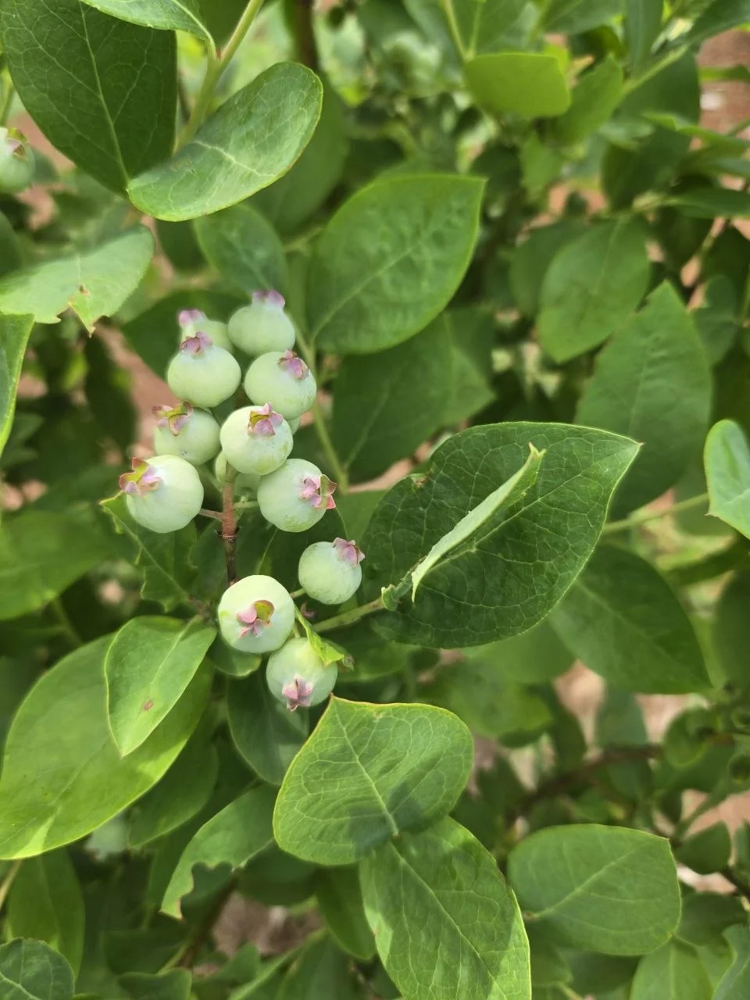

The practical starting point
Begin with food you eat
A 4×8 plan helps keep a small bed useful instead of crowded.
Open this part of the storyA useful garden plan is a good beginning. Keeping things alive, coming back at the right time, and using what grows are the rest of the story.

We have beds back in the city and a growing patch at the cabin. They’re different places with different problems. The city beds dried out while we were away. At the cabin, a first row became a few small harvests—and a grape crop we missed.
These are the published moments so far, alongside practical guides for your own place. There isn’t a completed planting-to-dinner story yet.
A 4×8 plan helps keep a small bed useful instead of crowded.
Open this part of the storySee the dried-up beds, then the April 2026 attempt to try again.
Open this part of the storyOur terracotta olla project grew out of missed watering. We haven’t published a measured result.
Open this part of the storyStart with the first trial row in June 2025, rather than treating the two gardens as one.
Open this part of the storyThe journal records a few vegetables, then a grape crop lost while we were away.
Open this part of the storyIdeas for using, freezing, drying, and sharing extra herbs. This guide is not a report of our cabin harvest.
Open this part of the storyThe jujubes and the 4-in-1 fruit tree were planted in April 2026. Their planting stories are here; a future harvest is still something to wait for.
The jujubes The 4-in-1 fruit tree All the garden threads Why this little bit of food matters to us